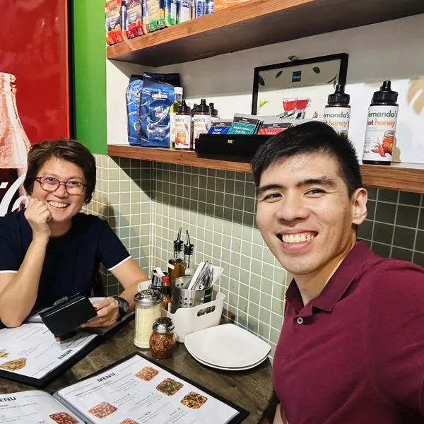
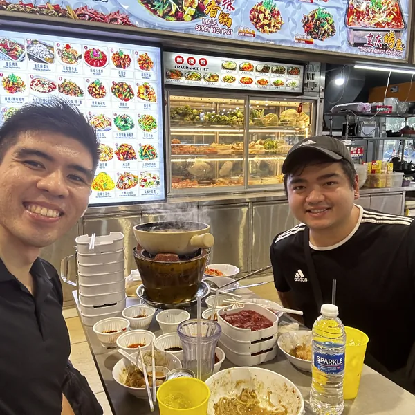
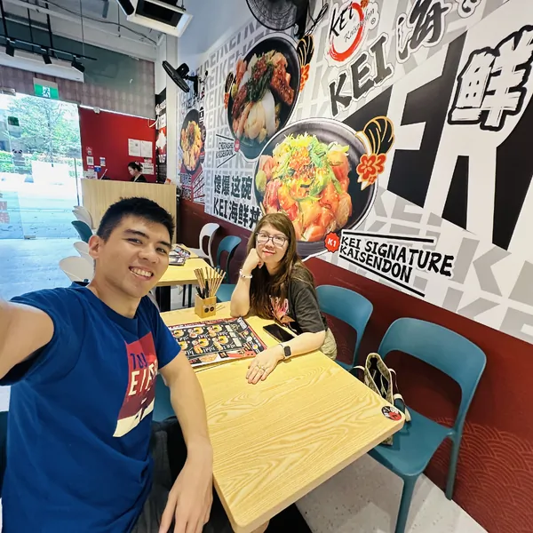
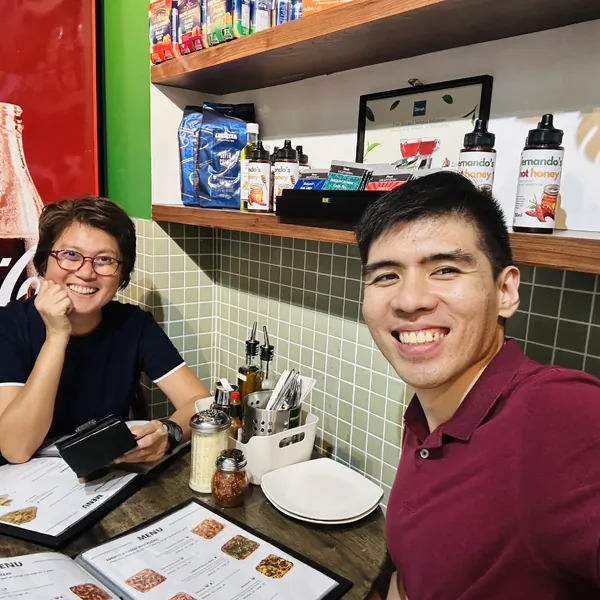
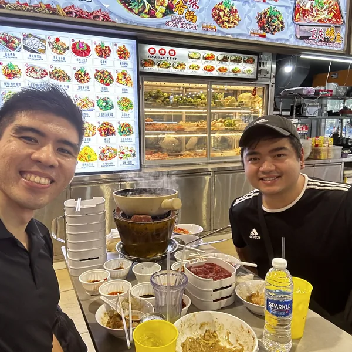
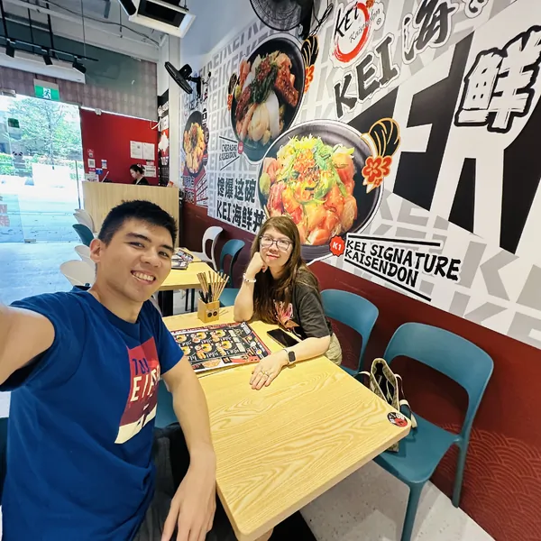
 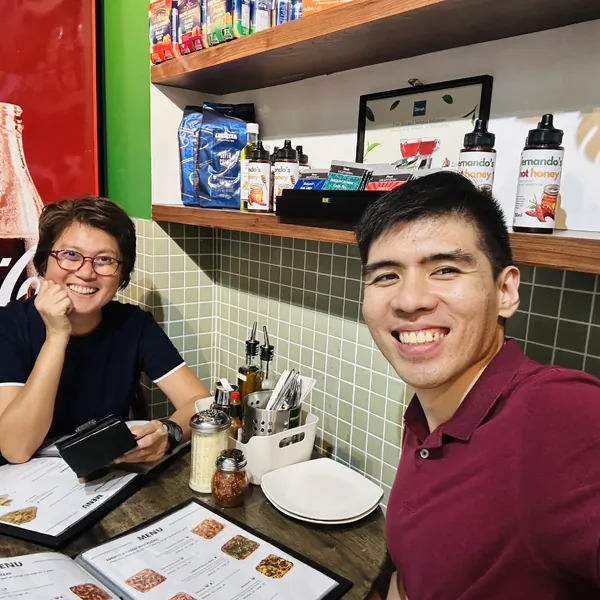
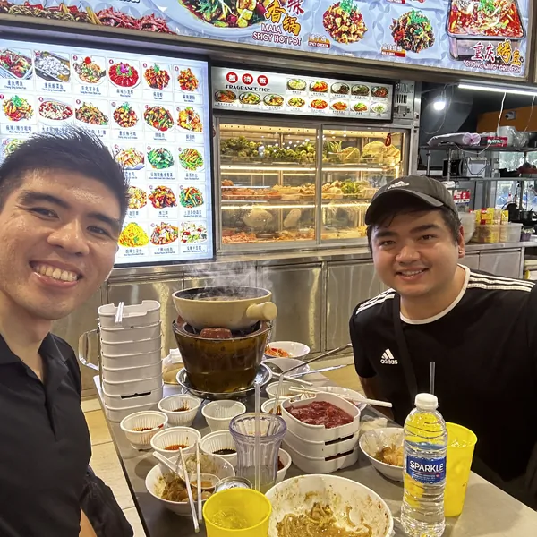
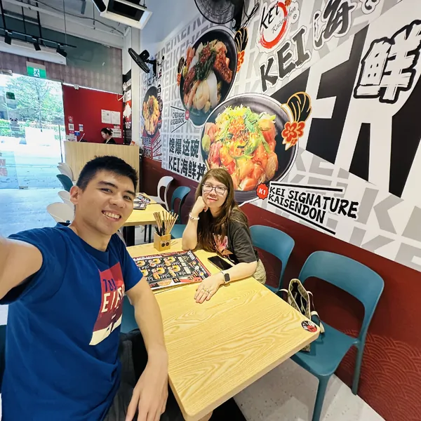
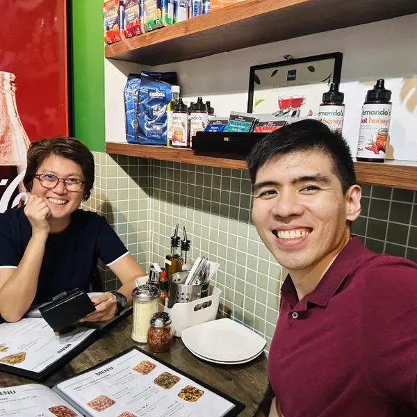
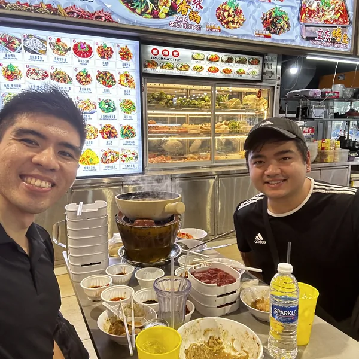
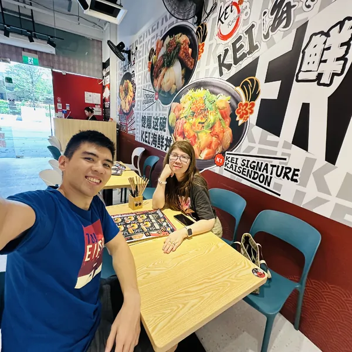
From the meticulous world of Big 4 auditing and the analytical realm of a software engineering degree holder, Shawn Dabi brings a unique and robust perspective to financial consulting. After two formative years in auditing, he chose a path dedicated to empowering individuals with financial clarity and security, embarking on his journey as a financial consultant with Prudential.
Now in his 2nd year, Shawn has had the privilege of serving over 100 clients – a growing family of friends and individuals whose financial futures he passionately helps shape.
"I’m truly thankful to Shawn for guiding me with such care and wisdom. Saving early in Singapore has been life-changing for me—it’s given me peace of mind, and the freedom to focus on my goals without being held back by financial stress."
"When I came down with pneumonia, Shawn’s guidance through the claims process was a huge relief. He made sure my treatment was covered, giving me peace of mind during recovery. I’m truly thankful to have his steady support on my side."

"Shawn was there for me when I suffered from severe blood loss, showing up at the hospital without hesitation. He personally guided me through the claims documentation, making a tough moment much easier to handle. I’m deeply grateful for his care, commitment, and incredible support."
"Thank you Shawn for patiently helping me to plan for a steady foundation for my retirement. It's not just growth I'm chasing; it's the peace of mind that comes from reinforcing my retirement portfolio with something stable and performance-driven."
"Shawn is an exceptionally patient and understanding individual. He consistently keeps me informed about my portfolio's performance with clarity and care. I'm truly grateful for his unwavering kindness, attentiveness, and dedication to helping others. His support has made a real difference in my financial journey. Thank you, Shawn!"
"Shawn has been incredibly helpful and insightful. He took the time to carefully review my policies, demonstrating a genuine commitment to understanding my financial landscape. Through our discussions, he helped me clarify my portfolio needs and uncover new opportunities to maximize its value. I'm truly grateful to have crossed paths with Shawn—his dedication, professionalism, and personal touch set him apart. I wholeheartedly recommend him to anyone seeking thoughtful insurance and financial guidance."

"Shawn is truly sincere and genuine—his approach stands out distinctly from others I've encountered. At the time, I was searching for both insurance coverage and a smart way to build my retirement portfolio. Shawn took the time to understand my goals, and his tailored recommendations gave me clarity and confidence. I’m genuinely impressed by the dedication and effort he puts into each person he works with. He treats your financial wellbeing like it's his own, and that kind of care is rare."
"Shawn is patient and methodical. I'm so grateful for him spending the time to review my policies with me and helping me unlock value when I needed it the most because I was having a career switch and needed guidance with my portfolio. His care and expertise is top-notch. I recommend him to anyone who needs care and advise for their portfolios!"
"Thank you Shawn for helping me uncover valuable insights—especially during a pivotal moment of change for my family. His guidance ensured my portfolio stayed aligned with our evolving needs. I wholeheartedly recommend Shawn to anyone seeking thoughtful and caring financial advice."

"Thank you Shawn for taking the time to understand my policy well and recommending changes that is really to my benefit. He really took the time to dig in and make good recommendations!"
"Shawn provided exceptional guidance, helping us achieve clarity and confidence in our financial journey, perfectly aligning with our family's evolving needs."
"Shawn's deep understanding of financial planning has been invaluable. He simplified complex concepts and helped me build a robust portfolio tailored to my goals."
"As a finance professional myself, I appreciate Shawn's meticulous approach and honest advice. He's truly dedicated to his clients' success."

"Shawn's support made a huge difference during a challenging time. His prompt and clear guidance on my claims process gave me immense peace of mind."
"Shawn is incredibly proactive and always keeps me updated. His insights have truly optimized my financial strategy, helping me feel secure for the future."
"Shawn's patient explanations helped me understand my policies thoroughly. I feel much more confident about my financial future thanks to his guidance."
"Shawn helped me navigate critical financial decisions with ease. His professional and caring approach is truly commendable."
"Shawn crafted a financial plan that perfectly aligns with my long-term goals. His expertise and dedication are truly exceptional."
"Shawn's advice has been instrumental in securing my financial future. He always goes the extra mile to ensure I understand everything."
"Shawn provided clear, actionable advice that made a significant positive impact on my financial planning. I highly recommend his services."

"Working with Shawn has been a fantastic experience. He's knowledgeable, trustworthy, and genuinely cares about his clients' well-being."
"Shawn’s guidance on saving and investing has truly transformed my financial outlook. I'm so grateful for his patience and clear explanations."

"Shawn is exceptional at simplifying complex financial concepts. He's helped me build a robust portfolio with confidence."
"Shawn's strategic insights have been invaluable. He truly understands my financial needs and provides tailored solutions."
"Shawn is incredibly reliable and always puts his clients first. His advice is sound and has positively impacted my financial journey."

"Shawn's holistic approach to financial planning has been perfect for our young family. He understands our unique needs and provides excellent solutions."

"Shawn's insights are always practical and effective. He's helped me make smart financial decisions that align with my career goals."

"Shawn's incredibly supportive and patient. He helped me understand my options clearly and choose the best path for my retirement planning."
"Shawn's friendly and professional demeanor made the financial planning process so much easier. I truly appreciate his dedication."
"Shawn has a remarkable ability to simplify complex financial terms. He made sure I felt comfortable and informed every step of the way."
"Shawn's genuine care for his clients shines through in every interaction. He's helped me secure my financial future with confidence."
"Shawn's professional yet approachable style made discussing my finances a breeze. I'm grateful for his invaluable guidance."
"Shawn consistently provides excellent advice and support. He's helped me optimize my portfolio for long-term growth and security."
"Shawn's truly dedicated to his clients' success. His proactive communication and tailored advice have been incredibly helpful."
"Shawn's calm and reassuring demeanor made complex financial decisions feel manageable. I highly recommend him."
"Shawn provided clear, actionable steps that significantly improved my financial planning. He's a true professional."
"Shawn's expertise in financial planning is evident. He's helped me gain clarity and confidence in my financial future."
"Shawn's personalized approach made all the difference. He understood my goals and helped me craft a realistic financial roadmap."
"Shawn is incredibly responsive and attentive. His advice has been crucial in navigating my financial decisions."
"Shawn's recommendations are always well-researched and tailored. He's an excellent financial consultant."
"Shawn's strategic insights have been invaluable in planning for my family's future. I'm so grateful for his guidance."
"Shawn helped us align our financial goals as a couple, providing clear and comprehensive advice. Highly recommended!"
"Shawn is very patient and explains everything clearly. I feel much more secure about my financial decisions now."
"Shawn's entrepreneurial mindset helps him understand my business needs. He's a great partner for financial planning."

"Shawn provided intelligent, data-driven advice that perfectly suited my complex financial situation. Excellent service!"
"Shawn's insights are incredibly sharp. He helped me identify opportunities and mitigate risks in my portfolio."
"Shawn's empathetic approach made me feel comfortable discussing my financial concerns. He's truly caring and professional."
"Shawn offered a comprehensive plan that addressed all my financial needs. His dedication is truly inspiring."
"Shawn is a reliable and knowledgeable consultant. He's helped me make significant progress towards my financial goals."
"Shawn provides clear, concise advice that's easy to understand and implement. I highly recommend his services."
"Shawn's proactive communication and personalized strategies have been instrumental in my financial success."
"Shawn is incredibly attentive and truly listens to your needs. His tailored advice has made a real difference."
"Shawn's clear explanations and patient guidance made my financial planning journey seamless. Truly appreciate his help!"
"Shawn's advice is always practical and insightful. He's helped me make informed decisions about my investments."
"Shawn goes above and beyond for his clients. His dedication and expertise are truly unmatched."
"Shawn's systematic approach to financial planning has given me immense clarity and peace of mind."
Essential financial tips and insights for OFWs building their future in Singapore.
Understand the core pillars of wealth creation and how to leverage them.
A real-life example of smart financial planning leading to significant tax savings.
Unlock the secret to exponential wealth growth through consistent, early investments.
Cut through the jargon and understand essential insurance for true peace of mind.
Practical and simple methods to take control of your spending and savings.
Understand basic investment concepts and how to confidently make your first move.
A localized guide to maximizing your retirement savings with Singaporean schemes.
Learn how to secure your legacy and ensure your loved ones are taken care of.